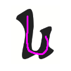
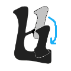

იმისათვის რათა გაიმარტივოთ ხუცური ასოს დამახსოვრება, სცადეთ მიამსგავსოთ მისი დამწერლობა მხედრულ (თანამედროვე)
დამწერლობას.
მაგალითად:
-
ასო "თ" თითქმის ერთნაირად გამოიყურება ხუცურშიც და მხედრულშიც:
-
ასევე ხუცური ასო "ს" თითქმის იდენტურია მხედრულისა:

-
ხუცური ასო "ო" ჰგავს გადაბრუნებულ მხედრულ ასოს:
-
ხუცურ ასო "ძ"-ს, წარმოიდგინეთ რომ მოაჭერით "კუდი":
-
ხუცურ ასო "ხ"-ს, წარმოიდგინეთ რომ აქვს "ტოტი", და ეს ტოტი ჩამოიღუნა დაბლა და წრე შეკრა:

...და ასე შემდეგ. გამოიყენეთ თქვენი წარმოსახვა, რომ დანარჩენ ასოებსაც მოუფიქროთ მიმსგავსება.